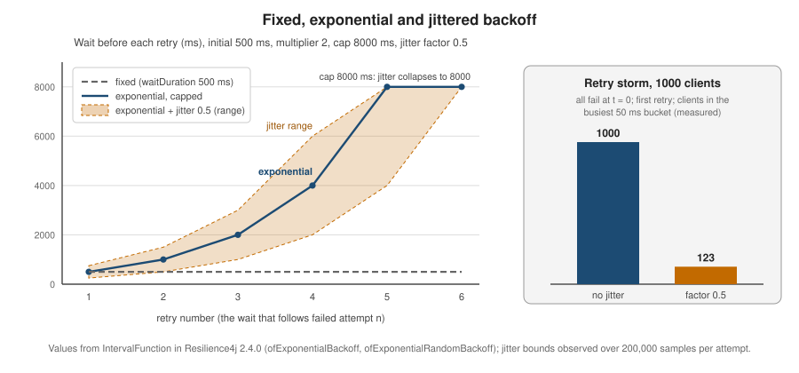

Retry
|
This content was generated with the assistance of AI and should be verified against the official documentation before being relied on in production. |
A retry repeats a call that failed, on the bet that the failure was transient. It is the cheapest resilience pattern and the
easiest to get wrong: a retry that is not bounded, not spaced out or not safe to repeat turns a small outage into a large
one. This page covers the Resilience4j Retry module end to end — what maxAttempts really counts, every configuration
property, the backoff and jitter functions, the traps in the Spring Boot properties, retry storms, Retry-After,
idempotency, events — and compares it with the native @Retryable of Spring Framework 7. It was written against
Resilience4j 2.4.0, Spring Boot 4.1.x, Spring Framework 7.0.x and Java 21, and every example on it was compiled and run on
those versions on 4 October 2026. The Retry API is the same on Spring Boot 3.5.x: the property names are identical, and
only the starter artifact (resilience4j-spring-boot3) and its Java package (io.github.resilience4j.springboot3) differ.
The vocabulary (idempotency, retry storm, thundering herd) is introduced in
Resilience Fundamentals; the model shared by all modules
(registries, shared configurations, decorators) is in
Registries, Configuration & Decorators.
In the running Bookshelf scenario, the third-party ISBN-metadata API has a request quota and answers 429 and 503 now
and then. A short, spaced-out retry hides most of those answers from the user; an eager one makes them worse.

How Retry works
Everything the module does fits in one loop. The decorated function runs; if it throws an exception that is retryable
(or returns a result that is, when a result predicate is configured), the Retry computes a wait, sleeps, and runs it
again, until the call succeeds or maxAttempts calls have been made.
Five facts follow from the source and are easy to get wrong:
-
maxAttemptsincludes the first call. The default is 3: one call plus at most two retries. A value below 1 is rejected withIllegalArgumentException. -
When the attempts run out because of an exception, the original exception is rethrown, not a wrapper. The
MaxRetriesExceededExceptionis reserved for the result-based case (see below). -
The sleep is a plain
Thread.sleepfor the synchronous decorators, so a retrying call holds its thread for the whole wait. On virtual threads (enabled in the Bookshelf withspring.threads.virtual.enabled) that is cheap; on a small platform-thread pool it is not, and aCompletionStagedecoration, which schedules the retry on aScheduledExecutorServiceinstead, avoids it. -
Only
Exceptionis caught. AnErrorsuch asOutOfMemoryErrorpropagates immediately. -
If the sleep is interrupted the thread’s interrupt flag is restored and the last exception is thrown.
A first retry, without Spring, shows the counting:
Retry retry = Retry.of("isbn", RetryConfig.custom()
.maxAttempts(3)
.waitDuration(Duration.ofMillis(5))
.build());
AtomicInteger calls = new AtomicInteger();
Supplier<String> title = Retry.decorateSupplier(retry, () -> {
calls.incrementAndGet();
throw new IllegalStateException("boom");
});
assertThatThrownBy(title::get)
.isInstanceOf(IllegalStateException.class) // the original exception, not a wrapper
.hasMessage("boom");
assertThat(calls.get()).isEqualTo(3); // one call + two retriesSource: Resilience4j: Retry and the
RetryImpl
source at v2.4.0. Run on Resilience4j 2.4.0: 3 invocations, then the original IllegalStateException.
Retry is the outermost pattern by default in the Spring Boot aspect chain (aspect order -5, ahead of the
CircuitBreaker, rate limiter, time limiter and bulkhead), which means every attempt passes through the inner patterns and
counts in their metrics. The ordering rules and how to change them are in
Annotations & Aspect Order.
Every property
RetryConfig has no mandatory setting: RetryConfig.ofDefaults() gives 3 attempts, 500 ms apart, retrying every
exception. The table lists every property, its default in 2.4.0 (verified in RetryConfig and
CommonRetryConfigurationProperties) and where it can be set. Boot properties live under
resilience4j.retry.configs.<name> (shared) and resilience4j.retry.instances.<name>; an instance that sets
baseConfig takes that configuration’s keys on top of the ones named default (default is always the root of the chain
when it exists), and an instance with no baseConfig starts from default alone.
RetryConfig builder |
Spring Boot property | Default | Meaning |
|---|---|---|---|
|
|
|
Total calls including the first. Must be at least 1. |
|
|
|
Fixed wait between attempts. Zero is allowed, negative is rejected. It is shorthand for a constant interval function. |
|
none: not bindable from YAML |
fixed 500 ms |
Wait computed from the attempt number (starting at 1). Use the factories in the next section. Setting it clears any |
|
|
derived from the interval function |
Wait computed from the attempt number and the outcome (the exception or the result). Needed for |
|
|
empty: every exception is retried |
Only these exceptions (and subclasses) are retried. |
|
|
empty |
These exceptions are never retried. Ignore wins over retry: an exception that matches both is not retried. |
|
|
none |
Custom decision on the exception. Combined with |
|
|
none |
Retry when a call returns normally but the result is unacceptable (an empty body, a "pending" status). |
|
|
|
Only matters with a result predicate: throw |
|
|
none |
Called with the attempt number and the rejected result before the wait, for example to release a resource held by that result. |
|
none: programmatic only |
|
When |
not part of |
|
|
Size of the ring buffer that feeds the |
not part of |
|
none |
Name of a shared configuration to start from. |
not part of |
|
see the Boot backoff section |
Boot-only switches that build an |
The aspect order is a separate property of the module, resilience4j.retry.retryAspectOrder (default
Ordered.LOWEST_PRECEDENCE - 5). The @Retry annotation carries three attributes: name (a SpEL expression is allowed),
configuration (a shared configuration key, useful when the name is computed) and fallbackMethod.
The deprecated maxRetryAttempts property was removed in 2.0.0 in favour of maxAttempts, and
consumeResultBeforeRetryAttempt exists in the code and in the Boot properties although the readme.io Retry page does not
list it.
Source: Resilience4j: Retry,
RetryConfig
and
CommonRetryConfigurationProperties
at v2.4.0.
Which exceptions are retried
The default retries everything, which is rarely what you want. Narrow it with the class lists, or with a predicate when the
decision depends on more than the type. The classification below was run against RetryConfig directly:
RetryConfig cfg = RetryConfig.custom()
.maxAttempts(3)
.retryExceptions(IOException.class)
.ignoreExceptions(FileNotFoundException.class)
.build();
cfg.getExceptionPredicate().test(new IOException()); // true
cfg.getExceptionPredicate().test(new FileNotFoundException()); // false: ignore wins
cfg.getExceptionPredicate().test(new IllegalStateException()); // false: not in the list
RetryConfig byMessage = RetryConfig.custom()
.retryOnException(t -> t.getMessage() != null && t.getMessage().startsWith("503"))
.build();Source: Resilience4j: Retry and the Javadoc of
RetryConfig.Builder
at v2.4.0. Verified: when retryOnException and retryExceptions are both set, an exception is retried if either one
accepts it.
This differs from the circuit breaker, where the legacy behaviour lets recordExceptions win over ignoreExceptions: for
Retry, ignore always wins.
Checked exceptions
Retry.decorateSupplier and decorateRunnable can only see unchecked exceptions, because the Java functional interfaces
cannot throw checked ones. For a call that declares IOException, use the Checked variants or the execute methods.
With the Spring Boot annotation nothing special is needed: the aspect runs the method through executeCheckedSupplier,
so a checked exception thrown by an annotated method is retried and finally rethrown unwrapped.
Retry retry = Retry.of("checked", RetryConfig.custom()
.maxAttempts(3)
.waitDuration(Duration.ofMillis(1))
.retryExceptions(IOException.class)
.build());
AtomicInteger calls = new AtomicInteger();
String result = retry.executeCheckedSupplier(() -> { // throws Throwable: declare or catch it
if (calls.incrementAndGet() < 3) {
throw new IOException("connection reset");
}
return "ok";
});Source: Resilience4j: Retry (the decorator section). Run: the third call
succeeds, the retry’s successful_with_retry counter becomes 1.
Retrying on a result
Some failures arrive as normal responses: a job endpoint that answers 200 with "status": "PENDING", or a lookup that
returns an empty body while a replica catches up. retryOnResult turns those into retries. When the attempts run out,
the default is to return the last (unacceptable) result unchanged; failAfterMaxAttempts(true) makes it throw
MaxRetriesExceededException instead, and writableStackTraceEnabled(false) makes that exception cheap.
RetryConfig base = RetryConfig.<String>custom()
.maxAttempts(3)
.waitDuration(Duration.ofMillis(1))
.retryOnResult(String::isEmpty)
.build();
// default: the last result is returned after 3 calls
String last = Retry.of("result", base).executeSupplier(() -> ""); // ""
// failAfterMaxAttempts: an explicit exception
RetryConfig strict = RetryConfig.<String>from(base)
.failAfterMaxAttempts(true)
.writableStackTraceEnabled(false)
.build();
Retry loud = Retry.of("resultStrict", strict);
assertThatThrownBy(() -> loud.executeSupplier(() -> ""))
.isInstanceOf(MaxRetriesExceededException.class)
.hasMessage("Retry 'resultStrict' has exhausted all attempts (3)");
// ((MaxRetriesExceededException) e).getCausingRetryName() is "resultStrict"Source: Resilience4j: Retry and
MaxRetriesExceededException
at v2.4.0. Run: 3 invocations in both cases; the exception message and the empty stack trace are as shown.
failAfterMaxAttempts has no effect when the call keeps throwing: the original exception is rethrown, as before
(verified with maxAttempts(2) and failAfterMaxAttempts(true): the caller still sees the IllegalStateException).
MaxRetriesExceededException extends RuntimeException, and the library also has a MaxRetriesExceeded class that is
only used as the "last throwable" inside the error event of a result-based failure. The property
consumeResultBeforeRetryAttempt runs between a rejected result and the wait:
RetryConfig cfg = RetryConfig.<String>custom()
.maxAttempts(3)
.waitDuration(Duration.ofMillis(1))
.retryOnResult(String::isEmpty)
.consumeResultBeforeRetryAttempt((attempt, result) ->
log.warn("attempt {} returned '{}', retrying", attempt, result))
.build();
// with three always-empty calls the consumer runs twice: attempts 1 and 2Source: RetryConfig.Builder.consumeResultBeforeRetryAttempt
at v2.4.0; the readme.io Retry page does not mention it.
Interval functions: fixed, exponential, randomized
The wait is computed by an IntervalFunction: it receives the attempt number (starting at 1, the number of the attempt
that just failed) and returns milliseconds. The factories are static methods of
io.github.resilience4j.core.IntervalFunction, and each exists in a long milliseconds and a Duration form. Defaults
are an initial interval of 500 ms, a multiplier of 1.5 and a randomization factor of 0.5.
| Factory | Behaviour | Example (500 ms, attempts 1 to 6) |
|---|---|---|
|
Fixed. |
500, 500, 500, 500, 500, 500 |
|
The general form: attempt 1 is |
|
|
Exponential. The default multiplier is 1.5, not 2. |
|
|
Exponential, capped at |
|
|
Fixed interval with jitter: a value uniformly spread around the interval by the randomization factor (default 0.5). |
|
|
Exponential, then jittered, then capped (when a |
|
Argument checks are strict: an interval below 1 ms, a randomization factor outside 0 to 1 and an attempt number below 1 all
throw IllegalArgumentException.
RetryConfig fixed = RetryConfig.custom()
.maxAttempts(4)
.intervalFunction(IntervalFunction.of(Duration.ofMillis(500)))
.build();
RetryConfig exponential = RetryConfig.custom()
.maxAttempts(5)
.intervalFunction(IntervalFunction.ofExponentialBackoff(
Duration.ofMillis(500), 2.0, Duration.ofSeconds(8)))
.build();
RetryConfig jittered = RetryConfig.custom()
.maxAttempts(5)
.intervalFunction(IntervalFunction.ofExponentialRandomBackoff(
Duration.ofMillis(500), 2.0, 0.5, Duration.ofSeconds(8)))
.build();
IntervalFunction f = IntervalFunction.ofExponentialBackoff(500, 2.0, 8000);
// f.apply(1) = 500, f.apply(5) = 8000, f.apply(7) = 8000Source: Resilience4j: Retry (IntervalFunction) and
IntervalFunction
at v2.4.0. The numbers in the table and in the figure were computed by calling these factories on 2.4.0.
Two properties of the capped, jittered form matter in practice. The cap is applied after the jitter, so the upper end of the range is exactly the cap, and once the exponential value exceeds the cap divided by one minus the factor the jitter disappears entirely: in the example above every wait from the sixth retry on is exactly 8000 ms for every client. Choose a cap well above the point where you expect to give up, or stop retrying before it is reached.
A negative interval means "stop"
An interval function may return a negative number to say "do not wait and do not retry". The retry publishes an error event and rethrows the last exception immediately. This is how a policy decides, mid-flight, that continuing is pointless:
RetryConfig cfg = RetryConfig.custom()
.maxAttempts(5)
.intervalBiFunction((attempt, outcome) -> -1L) // never wait: stop at the first failure
.build();
Retry retry = Retry.of("stop", cfg);
// the function body is called once, the IllegalStateException it threw is rethrown,
// and the only event is ERRORSource: RetryImpl
at v2.4.0 (waitIntervalAfterRuntimeException). The behaviour comes from the code path, not from a documented
contract: a negative value reaches Thread.sleep, which throws, and the retry then rethrows the last exception. It was
run and confirmed on 2.4.0. waitDuration(Duration) itself rejects a negative duration, so a negative interval is only
reachable through an interval function.
Spring Boot configuration and its traps
In Spring Boot the interval function cannot be set in YAML (there is no intervalFunction property), so the properties
enableExponentialBackoff, enableRandomizedWait and friends choose one of the factories above, always starting from
waitDuration:
| Boot property | Default when omitted | Effect |
|---|---|---|
|
|
Use an exponential function starting at |
|
|
The multiplier. Must be greater than 0. A property default of 2 is a common assumption; the library uses 1.5 unless you set it. |
|
no cap |
Upper bound for the computed wait. Must not be negative. |
|
|
Add jitter. |
|
|
Jitter as a fraction of the wait: the wait is spread over the range from |
The combinations map as follows: both flags select ofExponentialRandomBackoff, only enableExponentialBackoff selects
ofExponentialBackoff, only enableRandomizedWait selects ofRandomized, and neither keeps the fixed waitDuration.
resilience4j:
retry:
configs:
default:
maxAttempts: 3
waitDuration: 500ms
instances:
isbn:
baseConfig: default
maxAttempts: 4
waitDuration: 200ms
enableExponentialBackoff: true
exponentialBackoffMultiplier: 2
exponentialMaxWaitDuration: 5s
enableRandomizedWait: true
randomizedWaitFactor: 0.5
retryExceptionPredicate: com.example.bookshelf.TransientHttpFailureSource: Resilience4j: Spring Boot 2 & 3 (the properties) and
CommonRetryConfigurationProperties
at v2.4.0 (configureRetryIntervalFunction). Bound and run on Spring Boot 4.1.1: for attempts 1 to 8 every computed wait stayed
inside the range implied by 200 ms, multiplier 2, a 5 s cap and factor 0.5. The class named by
retryExceptionPredicate is shown in the idempotency section.
Reading the binder source and running it exposed five traps. None is documented on readme.io:
| Trap | What happens |
|---|---|
Backoff flags without |
Silently ignored. With |
Cap without a multiplier |
Silently ignored. |
Jitter factor without a multiplier |
The factor is ignored. With both flags on, |
|
The class wins. It is applied last, so the backoff flags are overwritten. |
Property validation |
|
An instance that is not listed in YAML but is requested by name (for example through @Retry(name = "unknown")) takes the
default configuration; verified on Boot 4.1.1.
@Service
public class IsbnLookup {
private final IsbnMetadataClient client;
public IsbnLookup(IsbnMetadataClient client) {
this.client = client;
}
/** Safe to retry: a GET of metadata is idempotent. */
@Retry(name = "isbn")
public String title(String isbn) {
return client.title(isbn);
}
}Source: Resilience4j: Spring Boot 2 & 3. The aspect needs
spring-boot-starter-aspectj on Boot 4 (see Getting Started).
Verified against a WireMock stub of the ISBN API: answers 503, 502, 200 produced exactly three requests and the title;
an always-503 stub produced four requests (maxAttempts: 4) and the original HttpServerErrorException reached the
caller.
Retry storms, jitter and budgets
A retry multiplies load by design. When many clients fail at once because a dependency hiccuped, a fixed-delay retry sends them all back at the same instant, then again, as a synchronised wave: a retry storm that can keep a recovering service down (the thundering herd of Resilience Fundamentals). Two things break it: spreading the retries in time, and limiting how many retries exist at all.
Spread them with exponential backoff and jitter. Backoff reduces the pressure over time; jitter removes the
synchronisation. The right-hand panel of the figure is measured, not illustrative: 1000 clients that fail at the same
moment and retry with ofExponentialBackoff(500, 2.0, 8000) all land within the same 50 ms bucket (1000 of 1000), while
with ofExponentialRandomBackoff(500, 2.0, 0.5, 8000) the busiest 50 ms bucket held 123. Prefer the jittered form for any
call to a shared dependency, and remember that the jitter vanishes once the cap is reached (previous section).
Count the layers. Retries nest, and they multiply. If a controller retries 3 times, the service it calls retries 3
times, and that service’s client retries 3 times, one failing leaf call becomes 27. Measured with three nested Retry
decorators of maxAttempts(3): the failing bottom call ran 27 times. Retry at one layer, normally the one closest to the
caller that can make a decision, and keep the others at 1.
Cap the total with a budget. A retry budget limits retries to a fraction of normal traffic, so that a total outage cannot
turn into a multiple of it. Resilience4j has no built-in budget, but retryOnException is a natural hook: it is evaluated
on every failure and can consult a shared counter. The class below allows retries up to 10% of requests plus a small
floor:
public class RetryBudget {
private final double ratio;
private final long minRetries;
private final AtomicLong requests = new AtomicLong();
private final AtomicLong retries = new AtomicLong();
public RetryBudget(double ratio, long minRetries) {
this.ratio = ratio;
this.minRetries = minRetries;
}
public void onRequest() {
requests.incrementAndGet();
}
/** True if one more retry fits in the budget. */
public boolean tryAcquireRetry() {
while (true) {
long used = retries.get();
if (used >= minRetries + (long) (ratio * requests.get())) {
return false;
}
if (retries.compareAndSet(used, used + 1)) {
return true;
}
}
}
}
// usage
RetryBudget budget = new RetryBudget(0.1, 2);
Retry retry = Retry.of("budget", RetryConfig.custom()
.maxAttempts(3)
.waitDuration(Duration.ofMillis(1))
.retryOnException(t -> budget.tryAcquireRetry())
.build());
// call budget.onRequest() once per incoming request, before executing the retrySource: the idea of limiting retries globally is the one behind retry throttling in the gRPC retry guide; this class is an original sketch, not a Resilience4j or Spring feature. Run: 50 requests against a service that always fails produced 57 calls (50 first attempts plus 7 retries) instead of 150. The predicate is also consulted for the final failure of a call, so the budget can be consumed slightly ahead of the actual retries.
Do not retry into an open circuit. With the default aspect order the retry wraps the circuit breaker, so once the breaker
opens, each retry attempt is rejected with CallNotPermittedException. That is fast but pointless; exclude it so the call
fails at once, and let the fallback handle it:
Retry noRetryOnOpen = Retry.of("noOpen", RetryConfig.custom()
.maxAttempts(5)
.waitDuration(Duration.ofMillis(1))
.ignoreExceptions(CallNotPermittedException.class)
.build());
Supplier<String> guarded = Decorators.ofSupplier(() -> "x")
.withCircuitBreaker(circuitBreaker)
.withRetry(noRetryOnOpen)
.decorate();
// with the breaker open: the body is never called and CallNotPermittedException is thrown onceSource: Resilience4j: Retry and the
README at v2.4.0 (Decorators). Run: with the
breaker open the body ran 0 times and the retry counted one failed call without retry attempt. The circuit breaker itself is
in CircuitBreaker; how the patterns combine is in
Fallbacks & Composition.
Honouring Retry-After
When a server says how long to wait, believe it. 429 Too Many Requests (RFC 6585) and 503 Service Unavailable may carry
a Retry-After header, either a number of seconds or an HTTP date (RFC 9110, section 10.2.3). A backoff computed
blindly will often retry too early, burn an attempt and earn another refusal. The IntervalBiFunction receives the
outcome of the failed attempt, so it can read the header from the exception and take the larger of the computed backoff
and the server’s request, or stop when the server asks for longer than the caller can afford:
public class RetryAfterIntervalFunction implements IntervalBiFunction<Object> {
static final long MAX_WAIT_MILLIS = 30_000;
private final IntervalFunction backoff = IntervalFunction.ofExponentialRandomBackoff(
Duration.ofMillis(200), 2.0, 0.5, Duration.ofSeconds(5));
@Override
public Long apply(Integer attempt, Either<Throwable, Object> outcome) {
long computed = backoff.apply(attempt);
if (outcome.isLeft() && outcome.getLeft() instanceof HttpStatusCodeException e) {
HttpHeaders headers = e.getResponseHeaders();
long asked = retryAfterMillis(headers == null ? null : headers.getFirst("Retry-After"));
if (asked > MAX_WAIT_MILLIS) {
return -1L; // too long: stop now, let the fallback degrade
}
return Math.max(computed, asked);
}
return computed;
}
/** Delta-seconds or an HTTP-date. */
static long retryAfterMillis(String value) {
if (value == null || value.isBlank()) {
return 0;
}
try {
return Math.max(0, Long.parseLong(value.trim()) * 1000);
} catch (NumberFormatException notSeconds) {
try {
Instant at = ZonedDateTime.parse(value.trim(), DateTimeFormatter.RFC_1123_DATE_TIME).toInstant();
return Math.max(0, Duration.between(Instant.now(), at).toMillis());
} catch (DateTimeParseException ignored) {
return 0;
}
}
}
}Source: the IntervalBiFunction contract in
resilience4j-core
at v2.4.0; the class itself is an original idiom, verified below.
Wire it in YAML (the class needs the public no-argument constructor it has):
resilience4j:
retry:
instances:
isbnRetryAfter:
baseConfig: default
maxAttempts: 3
retryExceptionPredicate: com.example.bookshelf.TransientHttpFailure
intervalBiFunction: com.example.bookshelf.RetryAfterIntervalFunctionSource: RFC 9110: HTTP Semantics (Retry-After),
RFC 6585 (429) and the IntervalBiFunction
source
at v2.4.0. Run against a WireMock stub of the ISBN API on Spring Boot 4.1.1: a 429 with Retry-After: 1 followed by a
200 made the second request arrive after at least one second (measured about 1.2 s, where the computed backoff alone would be
100 to 300 ms); a 429 with Retry-After: 3600 made exactly one request and the TooManyRequests exception reached the
caller. There is no standard, documented hook that reads Retry-After for you; this class is the idiom.
Idempotency: what is safe to retry
A retry re-executes the call, so the question is what re-execution does. Retry only operations whose repetition has no extra effect, and only failures that are plausibly transient.
| Operation | Safe to retry? | Why |
|---|---|---|
|
Yes |
Safe and idempotent by definition (RFC 9110). |
|
Yes |
Idempotent by definition: repeating them leaves the same state. The response may differ (a second |
|
Only with a deduplication key |
Not idempotent. A retry after a read timeout may create a second order. Send a client-generated |
A message publish |
Only with a deduplication id |
The broker may have accepted the first one. Consumer-side retries belong to the messaging stack (see below). |
| Failure | Retry? | Why |
|---|---|---|
Connection refused, connect timeout |
Yes |
The request never reached the server. |
Read timeout, connection reset after sending |
Only if the call is idempotent |
The server may have executed it. |
|
Yes (idempotent calls) |
Typical transient gateway or overload answers. |
|
Yes, after |
The server is rate limiting you; wait as told. |
|
Rarely |
Often a bug; repeating it repeats the bug. |
Other |
No |
The request is wrong; the next attempt will be wrong too. |
Business exception, validation error |
No |
Not a transient failure. |
The Bookshelf encodes this table as a predicate class that the YAML names with retryExceptionPredicate:
public class TransientHttpFailure implements Predicate<Throwable> {
@Override
public boolean test(Throwable t) {
if (t instanceof ResourceAccessException) { // connect/read I/O problems
return true;
}
if (t instanceof HttpClientErrorException.TooManyRequests) {
return true;
}
if (t instanceof HttpServerErrorException e) {
int status = e.getStatusCode().value();
return status == 502 || status == 503 || status == 504;
}
return false;
}
}Source: RFC 9110: HTTP Semantics (method semantics) and
REST APIs for the RestClient exception types. Run: a 404 produced one
request and the HttpClientErrorException.NotFound reached the caller; the transient predicate is the one used by the
isbn instance above. Note that ResourceAccessException also covers read timeouts, so use this predicate only for
idempotent calls, or split the connect-time failures out.
Retries that belong to the messaging stack are not Resilience4j’s job: a Kafka consumer retries with the listener container’s error handler and retry topics, described in Kafka Messaging and Spring Boot Kafka, and Spring Batch has its own skip-and-retry policy in Fault Tolerance: Skip and Retry.
Events and metrics
Each Retry has an EventPublisher with four event types, all subclasses of RetryEvent:
| Event class | Type | When |
|---|---|---|
|
|
A call failed (or its result was rejected) and a retry will follow. Carries |
|
|
A call succeeded after at least one retry. |
|
|
The retry gave up: attempts exhausted, or a negative interval. |
|
|
The exception was classified as not retryable and rethrown at once. |
Retry retry = Retry.of("events", RetryConfig.custom()
.maxAttempts(3)
.waitDuration(Duration.ofMillis(5))
.ignoreExceptions(IllegalArgumentException.class)
.build());
retry.getEventPublisher()
.onRetry(e -> log.info("retry {} in {} ms", e.getNumberOfRetryAttempts(), e.getWaitInterval().toMillis()))
.onSuccess(e -> log.info("succeeded after {} retries", e.getNumberOfRetryAttempts()))
.onError(e -> log.warn("gave up after {} attempts", e.getNumberOfRetryAttempts()))
.onIgnoredError(e -> log.info("not retried: {}", e.getLastThrowable().getClass().getSimpleName()));Source: Resilience4j: Retry (consume emitted events) and the
event
classes at v2.4.0. Run: a call that succeeded on its third attempt produced RETRY (attempt 1), RETRY (attempt 2),
SUCCESS (after 2); an ignored exception produced IGNORED_ERROR; a call that exhausted three attempts produced two
RETRY events and one ERROR (after 3).
The same instance exposes four counters through retry.getMetrics(): successful calls without a retry, successful calls with
a retry, failed calls without a retry (ignored exceptions) and failed calls after retrying. With Micrometer they become
resilience4j.retry.calls with the tags name and kind (successful_without_retry, successful_with_retry,
failed_without_retry, failed_with_retry). Spring Boot also publishes the retries and retryevents Actuator
endpoints (the latter fed by eventConsumerBufferSize). A rising successful_with_retry rate is the early-warning
signal; a dashboard and alerting recipe is in
Observability and the base Actuator setup in
Metrics and Observability.
Resilience4j Retry also works for asynchronous code: executeCompletionStage schedules each retry on a
ScheduledExecutorService instead of sleeping a thread, and the Reactor and RxJava operators are covered in
Reactive, Kotlin & RxJava.
ScheduledExecutorService scheduler = Executors.newSingleThreadScheduledExecutor();
CompletionStage<String> stage = retry.executeCompletionStage(scheduler, () ->
CompletableFuture.supplyAsync(() -> callIsbnApi()));Source: Resilience4j: Retry. Run: a stage that failed twice and then succeeded completed after exactly three calls.
Retry compared with Spring Framework 7 @Retryable
Spring Framework 7.0 added native resilience annotations, @Retryable and @ConcurrencyLimit, enabled by
@EnableResilientMethods in the org.springframework.resilience.annotation package, with the programmatic
RetryTemplate and RetryPolicy in org.springframework.core.retry. They replace the archived
Spring Retry project. They are a sound choice when all you need is a
bounded retry and no extra dependency. They do not provide a circuit breaker, rate limiter, time limiter, metrics
endpoint or health indicator, so they stop being enough where those matter. Spring’s own pages are covered in
Spring Framework Native Resilience; this
section compares only the retry feature.
| Aspect | Resilience4j @Retry |
Spring Framework 7 @Retryable |
|---|---|---|
Attempt counting |
|
|
Delay |
|
|
Backoff |
Exponential and jitter through interval functions or the Boot properties; default multiplier 1.5 when backoff is on |
|
Jitter |
A factor between 0 and 1 of the wait, via |
|
Which exceptions |
|
|
Overall time limit |
None in |
|
Result-based retry |
|
No |
Wait from the failure ( |
|
No: the annotation exposes a fixed delay and multiplier |
Placeholders in values |
YAML in Boot properties |
String variants such as |
After exhaustion |
The last exception; |
The last exception (the cause of the internal |
Observability |
Events, |
A Spring |
Reactive return types |
Reactor and RxJava operators (separate modules) |
|
Setup |
|
|
The attempt-count difference is the one that bites when migrating a number from one to the other: the same figure of 3 means three calls in Resilience4j and four in Spring.
// Resilience4j: 3 calls in total (the first plus two retries)
@Retry(name = "isbn") // resilience4j.retry.instances.isbn.maxAttempts: 3
public String title(String isbn) { ... }
// Spring Framework 7: maxRetries = 2 gives the same 3 calls in total
@Retryable(maxRetries = 2, delay = 500, multiplier = 2.0, maxDelay = 5000,
includes = ResourceAccessException.class)
public String titleNative(String isbn) { ... }
@Configuration
@EnableResilientMethods
class ResilienceConfig { }Source: Spring Framework: Resilience features and
Core Spring Resilience Features; the attributes and
defaults were read from the 7.0.9 sources of org.springframework.resilience.annotation.Retryable. Run on Spring
Framework 7.0.9 in a plain annotation-configured context: a method with only delay = 10 set (other attributes at
their defaults) was invoked 4 times and rethrew the original IllegalStateException; maxRetries = 2 with
includes = IOException.class invoked the method 3 times; an excluded exception was invoked once.
Use the native annotation when the need is a plain bounded retry on a method and you want no extra dependency. Use
Resilience4j Retry when you need result-based retry, a delay that depends on the response, retry events and metrics, a
per-instance configuration in YAML, or one programming model alongside the circuit breaker, bulkhead and rate limiter. The
two can coexist, but then their ordering needs thought: two retry layers multiply, as in the previous section.
Pitfalls
| Pitfall | Fix |
|---|---|
Treating |
It includes the first call. |
Retrying non-idempotent calls |
Retry only idempotent operations, or add an idempotency key the server enforces. |
Retrying every exception |
Narrow it with |
Fixed delay with many clients |
Use exponential backoff with jitter. |
Setting a cap or a jitter factor in YAML without the multiplier |
Both are silently ignored in 2.4.0. Set |
Backoff flags with no |
Ignored: the instance keeps the 500 ms default. Always set |
Retries at every layer |
They multiply (3 x 3 x 3 = 27). Retry at one layer. |
Retrying into an open circuit |
Add |
Long waits on a small thread pool |
The sync decorators sleep the thread: use virtual threads or the |
Ignoring |
Use an |
Expecting |
It is only thrown for result-based failures with |
Copying |
There is no such property for |
What changed recently
-
2.0.0 removed the deprecated
maxRetryAttemptsproperty in favour ofmaxAttempts; Vavr became optional and the baseline moved to Java 17. Retry behaviour is otherwise unchanged through 2.4.0. -
2.4.0 adds
resilience4j-spring-boot4for Spring Boot 4; theRetryAPI and the YAML properties are the same as withresilience4j-spring-boot3. The release notes are in the GitHub release;RELEASENOTES.adocat the tag stops at 2.3.0. -
Spring Framework 7.0 introduced
@RetryableandRetryTemplatein core; Spring Retry is archived. -
The readme.io Retry page predates these facts and still shows Vavr and an older Gradle syntax; follow the source for defaults.